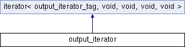

类 output_iterator 继承关系图:

额外继承的成员函数 | |
 Public 类型 继承自 iterator< output_iterator_tag, void, void, void, void > Public 类型 继承自 iterator< output_iterator_tag, void, void, void, void > | |
| typedef output_iterator_tag | iterator_category |
该结构体的文档由以下文件生成:
- E:/ReactOS-0.4.6/sdk/include/c++/stlport/stl/_iterator_base.h
|
ReactOS
|
额外继承的成员函数 | |
| Public 类型 继承自 iterator< output_iterator_tag, void, void, void, void > | |
| typedef output_iterator_tag | iterator_category |
 1.8.13
1.8.13